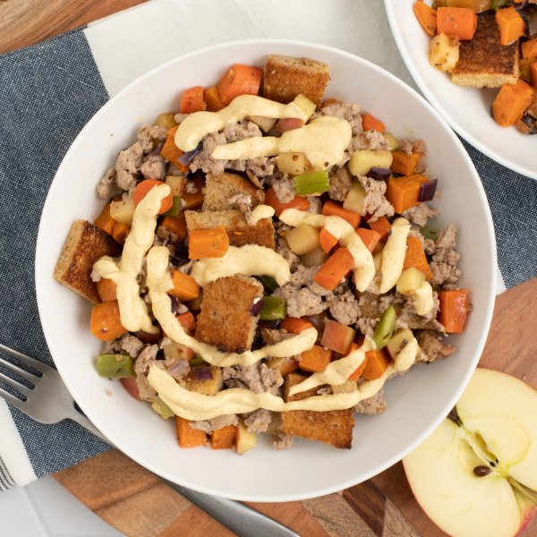

Sausage, Apple & Sweet Potato Stuffing Bowl with Sweet Curry Sauce

Total Time
35 min
Nutrition (Per Serving)
694 kcalCalories
26.8 gProtein
65.7 gCarbs
37.3 gFat
Full nutrition table
| Calories | 694 kcal |
| Total fat | 37.3 g |
| Saturated fat | 11.1 g |
| Trans fat | 0.2 g |
| Cholesterol | 73.5 mg |
| Sodium | 1157.6 mg |
| Carbohydrates | 65.7 g |
| Fiber | 10.1 g |
| Sugars | 22.8 g |
| Protein | 26.8 g |
| Potassium | 1168.2 mg |
| Calcium | 191.3 mg |
| Iron | 4.3 mg |
| Vitamin A | 16271.7 IU |
| Vitamin C | 11.9 mg |
| Vitamin D | 1.7 IU |
Cookware
Ingredients
- 2 mediumcarrots
- 2 stickscelery
- 2Gala apples
- 1 lbground pork sausage
- ⅔ cupplain Greek yogurt
- 1 mediumred onion
- 1 lbsweet potato
- 4 sliceswhole grain bread
- black pepper
- cinnamon, ground
- curry powder
- Dijon mustard
- extra virgin olive oil
- garlic powder
- honey
- sage, dried
- salt
- thyme, dried
Steps
- Preheat oven to 450°F and position rack in the upper third of the oven.
- Wash and dry the fresh produce.2 medium carrots
1 lb sweet potato
2 sticks celery
2 Gala apples - Peel, trim, and medium dice carrots and sweet potatoes. Transfer both to a large baking sheet pan.
- Trim and medium dice celery; peel, halve, and medium dice onion. Add both to the baking sheet with the other veggies, drizzle with oil, and season with spices; toss to combine and spread out in an even layer.1 medium red onion
4 tsp extra virgin olive oil
1 tsp sage, dried
1 tsp thyme, dried
1 tsp salt
½ tsp black pepper
½ tsp cinnamon, ground - Place veggies in the oven (it doesn't have to be fully heated) and roast, tossing halfway through, until fork-tender, 15-18 minutes.
- Meanwhile, preheat a large skillet over medium-high heat.
- While the skillet heats up, quarter, core, and medium dice apples.
- Once the skillet is hot, add oil and swirl to coat the bottom; add apple, sausage, and spices. Cook, breaking the meat apart with a spoon, until browned and crumbly, 4-5 minutes; remove from heat.2 tsp extra virgin olive oil
1 lb ground pork sausage
½ tsp sage, dried
¼ tsp salt
⅛ tsp black pepper - While the sausage and apple are cooking, place yogurt, water, honey, Dijon, and spices in a small bowl; whisk to combine the sauce. Add additional water, 1 tablespoon at a time, if needed, to reach a drizzling consistency. Set aside.⅔ cup plain Greek yogurt
2 tbsp water
2 tsp honey
2 tsp Dijon mustard
2 tsp curry powder
½ tsp garlic powder
¼ tsp salt - Cut bread into 1-inch cubes.4 slices whole grain bread
- When the veggies are done, remove from oven and set oven to broil on high.
- Sprinkle bread cubes over the veggies, return baking sheet to the oven, and broil until golden and toasted, 2-3 minutes.
- When the bread cubes are done, remove from the oven; add sausage mixture to the baking sheet and toss to combine the "stuffing."
- To serve, divide stuffing between bowls, drizzle with sauce, and enjoy!